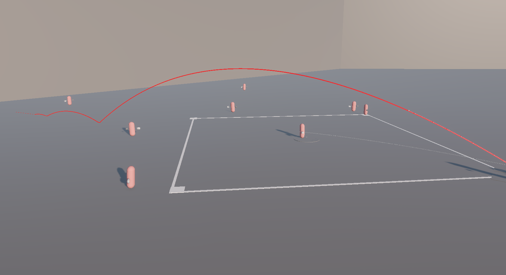
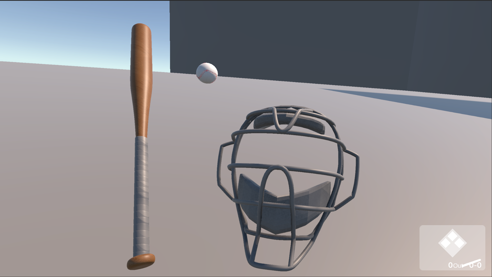
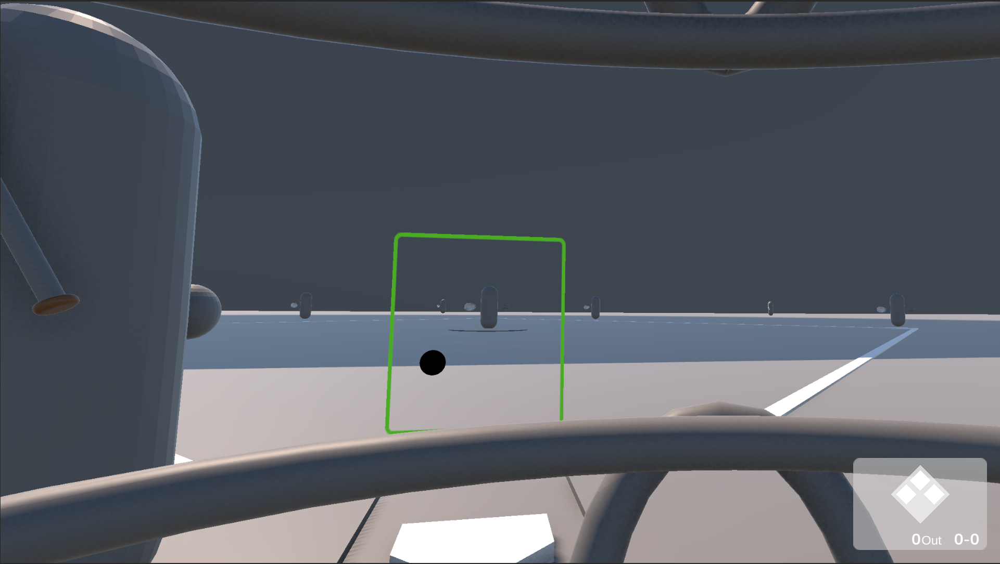
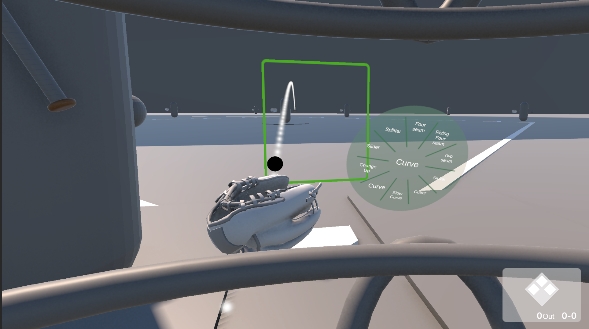
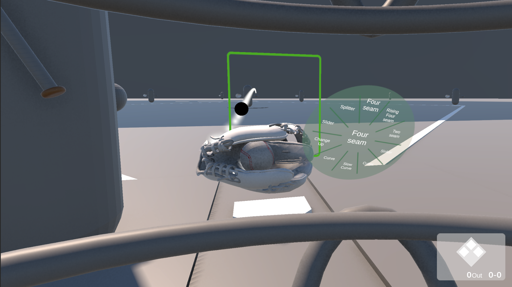

Unity
C#
OpenXR
Meta Quest 2
XR Interaction Toolkit
Blender
DOTween
AI 활용 범위: 수비수·타자 AI 스크립트 고도화 및 코드 최적화, 스트라이크/볼 판정과 UI 표시 스크립트
핵심 구현
실시간 타구 궤적 예측
배트 접촉 순간의 속도·방향으로 포물선 궤적과 최종 낙구 지점을 연산. 투구/타구/포구 이벤트 주도권을 상태 플래그로 분리하고 공기 저항 감쇄 공식을 보정했습니다.

역할 배정 수비 AI
가장 인접한 수비수에게 포구 타겟을 할당하고, 나머지는 백업 커버 및 베이스 수비로 전환하는 지능형 수비 구조를 구현했습니다.

시스템 구조
투구 입력
구질(포심·투심·슬라이더·커브·체인지업) 선택 → 초기 속도·회전축·궤적 변화량 파라미터화
물리 궤적 연산
Rigidbody 속도·질량 기반 포물선 궤적을 매 프레임 재계산, LineRenderer로 예측 궤적 시각화
BallProjectileCalculator
타격 / 충돌 판정
배트 접촉 순간 상태 플래그로 투구·타구 이벤트 주도권을 분리하고 공기 저항 감쇄 보정
수비 AI (FSM)
타구 방향·낙구 지점 분석 → 최근접 수비수에게 포구 타겟 할당, 나머지는 베이스 커버·백업 전환
BaseballPlayer
카운트 판정
파울라인·스트라이크 존·플라이 아웃 판정, 볼카운트 갱신
CountsProvider
개발 사항
- 포심·투심·슬라이더·커브·체인지업 등 구질별 초기 속도·회전축·궤적 변화량을 파라미터화하고, 투구 시작 시점부터 구질별로 다른 실시간 가속도를 적용해 사실적인 투구 궤적을 구현
Ball의 상태 플래그(_aiThrows,_playerThrows,_isBattedBall)로 지금 공을 누가 제어 중인지 명확히 구분하고, 타구 시에만 공기 저항 감쇄 계수(0.35f)를 조건부로 적용해 투구 궤적과 다른 물리 거동을 구현BallProjectileCalculator에서 Rigidbody의 선형 속도·질량을 기반으로 포물선 궤적을 매 프레임 재계산하고, LineRenderer로 예측 낙구 지점까지 궤적을 시각화BaseballPlayer를 상속한 수비수가 타구 방향·낙구 지점을 분석해 가장 가까운 수비수에게 포구 타겟을 할당하고, 나머지는 FSM으로 베이스 커버·백업 상태로 전환AssignSpecialRole로 상황에 따라 수비 위치를 동적으로 재배정하고, 투수의 베이스 커버와 외야 백업 동선까지 자동으로 전환되도록 구현- XR Interaction Toolkit을 커스텀해 글러브 트랜스폼과 물리 충돌체를 동기화하고,
CountsProvider로 파울라인·스트라이크 존·플라이 아웃을 판정
스크린샷



